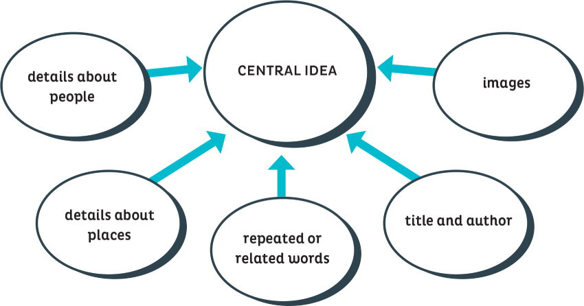

6
BEFORE YOU
READ
Reading Strategy
IDENTIFY SUPPORTING EVIDENCE
You will read memoirs (stories about people’s pasts) by visual artists in the United States. The artists write about their ancestors.
As you read, think about the most important idea. This is called the central idea (main idea).
CULTURE NOTE
Memoir is a loan word from French. It means memory. English has many loan words. Do you know any?
Supporting Evidence Organizer
To find the central idea, look for supporting evidence. Supporting evidence is something that proves what you say
-
Look at the title, author, and images.
-
Look for details about people and places.
-
Look for clue words that are repeated or related.
 A
Read the memoir “My Grandmother Miriam Sultani Zughaib” and look at the images.
A
Read the memoir “My Grandmother Miriam Sultani Zughaib” and look at the images.
-
What is the title and who is the author?
-
What do you see in the images?
-
Write three clue words from the text.